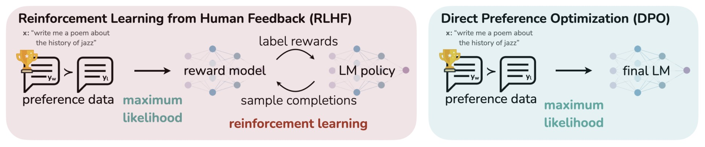

LLM Alignment
- Overview
- Refresher: Basics of Reinforcement Learning
- Reinforcement Learning from Human Feedback (RLHF)
- Proximal Policy Optimization (PPO)
- Reinforcement Learning with AI Feedback (RLAIF)
- Direct Preference Optimization (DPO)
- Kahneman-Tversky Optimization (KTO)
- PPO vs. DPO vs. KTO
- SimPO: Simple Preference Optimization with a Reference-Free Reward
- Bias Concerns and Mitigation Strategies
- Relevant papers
- OpenAI’s Paper on InstructGPT
- Constitutional AI: Harmlessness from AI Feedback
- OpenAI’s Paper on PPO
- Anthropic’s Paper on Constitutional AI
- RLAIF: Scaling Reinforcement Learning from Human Feedback with AI Feedback
- Reinforced Self-Training (ReST) for Language Modeling
- Beyond Human Data: Scaling Self-Training for Problem-Solving with Language Models
- Diffusion Model Alignment Using Direct Preference Optimization
- Human-Centered Loss Functions (HALOs)
- Nash Learning from Human Feedback
- Group Preference Optimization: Few-shot Alignment of Large Language Models
- ICDPO: Effectively Borrowing Alignment Capability of Others via In-context Direct Preference Optimization
- Further Reading
- References
Overview
- In 2017, OpenAI introduced a groundbreaking approach to machine learning called Reinforcement Learning from Human Feedback (RLHF), specifically focusing on human preferences, in their paper “Deep reinforcement learning from human preferences”. This innovative concept has since inspired further research and development in the field.
- The concept behind RLHF is straightforward yet powerful: it involves using a pretrained language model and having human evaluators rank its outputs. This ranking then informs the model to develop a preference for certain types of responses, leading to more reliable and safer outputs.
- RLHF effectively leverages human feedback to enhance the performance of language models. It combines the strengths of reinforcement learning algorithms with the nuanced understanding of human input, facilitating continuous learning and improvement in the model.
- Incorporating human feedback, RLHF not only improves the model’s natural language understanding and generation capabilities but also boosts its efficiency in specific tasks like text classification or translation.
- Moreover, RLHF plays a crucial role in addressing bias within language models. By allowing human input to guide and correct the model’s language use, it fosters more equitable and inclusive communication. However, it’s important to be mindful of the potential for human-induced bias in this process.
Refresher: Basics of Reinforcement Learning
- To understand why reinforcement learning is employed in RLHF, we need to gain a better understanding of what it entails.
- Reinforcement learning has its basics in mathematics where an agent is interacting with the environment as shown below (source):
- In this interaction, the agent takes an action, and the environment responds with a state and a reward. Here’s a brief on the key terms:
- The reward is the objective that we want to optimize.
- A state is the representation of the environment/world at the current time index.
- A policy is used to map from that state to an action.
Reinforcement Learning from Human Feedback (RLHF)
- Let’s start out by talking about what the motivation behind aligning LLMs to human feedback is.
- The initial objective of training large language models like GPT was to predict subsequent text tokens accurately. However, this approach did not ensure that the outputs were helpful, harmless, or honest.
- Consequently, there was a risk of generating content that might not align with ethical or safe human standards. To address this, a process was required to guide the model towards outputs that reflect human values, and that’s the role RLHF fulfills.
- The image below (source), depicts how RLHF was leveraged in InstructGPT and will be used as the foundation of our understanding.

- The image outlines a three-step process used to train a language model using RLHF. Here’s an explanation of each step:
- Collect Demonstration Data, and Train a Supervised Policy.
- A prompt is taken from a collection of prompts.
- A human labeler (an annotator) provides the desired output, demonstrating how the model should ideally respond.
- This labeled data is then used to fine-tune the language model (like GPT-3) using supervised learning techniques. Essentially, the model is taught to imitate the demonstrations.
- Collect Comparison Data, and Train a Reward Model.
- A prompt is chosen, and the model generates several potential outputs.
- A labeler then ranks these outputs from best to worst according to criteria like helpfulness or accuracy.
- This ranked data is used to train a reward model. The reward model learns to predict the quality of the language model’s outputs based on the rankings provided by human labelers.
- Optimize a Policy Against the Reward Model Using Reinforcement Learning.
- A new prompt is selected from the dataset.
- The current policy (strategy the model uses to generate outputs) creates a response.
- The reward model evaluates this response and assigns a reward.
- This reward information is used to update and improve the policy through a reinforcement learning algorithm known as Proximal Policy Optimization (PPO) . The policy is adjusted to increase the likelihood of generating higher-reward outputs in the future.
- Collect Demonstration Data, and Train a Supervised Policy.
- Chip Huyen provides a zoomed out view of how the overall process works in her flowchart below:
-
Here’s a breakdown of the flowchart:
- Language Modeling:
- This is the first stage where a language model is trained on a large dataset. The dataset is composed of a vast amount of text data, which can be of varying quality. The training at this stage is optimized for text completion tasks. The scale mentioned is over 1 trillion tokens, and examples of such models include GPT-x, Gopher, Falcon, LLama, Pythia, Bloom, and StableLM. This results in a Pretrained Large Language Model (LLM).
- To expand further: This is phase of pretraining involves developing a large language model (LLM) that functions as a completion machine, using statistical knowledge to predict the likelihood of sequences in language. This is achieved by feeding the model extensive text data, often exceeding trillions of tokens, from varied sources to learn language patterns. The model’s efficacy is contingent on the quality of the training data, with the aim to minimize cross-entropy loss across training samples. As the Internet becomes saturated with data, including that generated by LLMs themselves, there’s a growing need to access proprietary data for further model improvement.
- Supervised Finetuning:
- In the second stage, the pretrained LLM is further finetuned using high-quality data, which is often dialogue-focused to better suit conversational AI. This is done using demonstration data, and the process generates a Supervised Finetuning (SFT) model. The amount of data used for finetuning ranges from 10,000 to 100,000 (prompt, response) pairs. Examples of models that go through this process are Dolly-v2 and Falcon-Instruct.
- To elaborate: This is phase involves Supervised Fine-Tuning (SFT) for dialogue, where a pre-trained model is optimized to generate preferred responses to prompts, such as direct answers to questions. High-quality demonstration data, consisting of prompt-response pairs, guides the model’s behavior. With about 13,000 such pairs, OpenAI’s approach emphasizes quality through expert labelers, while others like DeepMind use heuristics for data selection. The SFT process is critical for tailoring the model’s outputs to practical use cases, leveraging a smaller yet refined dataset to minimize cross-entropy loss for the dialogue-specific responses.
- Classification and Reward Modeling:
- The model undergoes a classification process where it is trained to give a scalar score to responses based on human feedback. This is to ensure that the model can evaluate the quality of its own responses. The data used here is called comparison data, and involves 100,000 to 1 million comparisons between a prompt, a winning response, and a losing response. This stage results in the creation of a Reward model.
- Reinforcement Learning (RLHF):
- This phase involves using Reinforcement Learning techniques to train the model to generate responses that maximize the scores given by the reward model, effectively teaching the AI to prefer high-quality responses as judged by humans. This stage uses prompts (10,000 to 100,000) to adjust the model’s responses. The end product is the Final model, which should be adept at handling prompts in a way that aligns with human preferences. Examples of such models are InstructGPT, ChatGPT, Claude, and StableVicuna.
- This phase of RLHF is an advanced training process that refines the behavior of a Supervised Fine-Tuned (SFT) model. It uses human feedback to score AI-generated responses, guiding the model to produce high-quality outputs. RLHF involves training a reward model to evaluate responses and optimizing the language model to prioritize these high scores. This phase addresses the limitations of SFT by providing nuanced feedback on the quality of responses, not just their plausibility, and mitigates issues like hallucination by aligning model outputs more closely with human expectations. Despite its complexity, RLHF has been shown to enhance model performance significantly over SFT alone.
- Language Modeling:
-
Below, we will expand on the key steps mentioned in this flow.
Reward Model
- In the context of RLHF, the key function of a reward model is to evaluate a given input (such as a sequence of text) and produce a scalar reward. This reward is indicative of human preferences or judgments about the quality or desirability of the input.

- The image above (source) displays how the reward model works internally.
- A reward model is a function or model that takes as input the output or behavior of an AI agent, which can include sequences of text, and produces a scalar reward signal that quantifies how well those outputs align with human preferences or desired behavior.
- Architectures for reward models include:
- LM classifiers: An LLM fine-tuned as a binary classifier to score which response better fits the human preference
- Value networks: Regression models that predict a scalar rating representing relative human preference
- Critique generators: LMs trained to generate an evaluative critique explaining which response is better and why. The critique is used with instruction tuning.
- The goal is converting noisy human subjective judgments into a consistent reward function that can guide an RL agent’s training. Better reward modeling yields superior performance.
- To summarize, the reward model is trained using the ranked comparison data (several outputs generated by the model) based on it’s alignment criteria which can be helpful, harmless, and honesty. The reward function combines various models into the RLHF process. It evaluates generated text’s “preferability.” by including a penalty term based on the Kullback-Leibler (KL) divergence between probability distributions from the RL policy and the initial model. This penalty prevents the RL policy from deviating significantly from the pretrained model, ensuring coherent text generation.
- The Kullback-Leibler (KL) divergence, which is a measure of the difference between two probability distributions, can be used to overlap the two distributions (initial LM output vs. tuned LM output).
- KL divergence is a measure of how one probability distribution diverges from a second, expected probability distribution. It quantifies the difference between two probability distributions.
- Thus, with RLHF, KL divergence can be used to compare the probability distribution of an agent’s current policy with a reference distribution that represents the desired behavior.
- The Kullback-Leibler (KL) divergence, which is a measure of the difference between two probability distributions, can be used to overlap the two distributions (initial LM output vs. tuned LM output).
Optimizing the Policy
- The “policy” refers to a strategy or a set of rules that an agent uses to make decisions in an environment. The policy defines how the agent selects actions based on its current observations or state.
- The policy in PPO is iteratively updated to maximize reward while maintaining a certain level of similarity to its previous version (to prevent drastic changes that could lead to instability).
- In Direct Preference Optimization (DPO), the policy is optimized directly from human preferences, where it increases the relative log probability of preferred responses to unpreferred ones using a binary cross entropy loss, thus aligning with human feedback while maintaining a balance as specified by the KL divergence constraint.
Putting it all together: Training Llama 2
- As a case study of how Llama 2 was trained, let’s go over the multi-stage process that integrates both human and model-generated feedback to refine the performance of language models. Here’s how it functions:
- Pretraining: Llama 2 undergoes initial pretraining with large amounts of data through self-supervised learning. This stage lays the foundation for the model by enabling it to understand language patterns and context.
- Supervised Fine-Tuning: The model then undergoes supervised fine-tuning with instruction data, where it is trained to respond to prompts in ways that align with specific instructions.
- Reward Models Creation (RLHF Step 1): Two separate reward models are created using human preference data –- one for helpfulness and one for safety. These models are trained to predict which of two responses is better based on human judgments.
- Margin Loss and Ranking: Unlike the previous approach that generates multiple outputs and uses a “k choose 2” comparison method, Llama 2’s dataset is based on binary comparisons, and each labeler is presented with only two responses at a time. A margin label is collected alongside binary ranks to indicate the degree of preference, which can inform the ranking loss calculation.
- Rejection Sampling and Alignment using PPO (RLHF Step 2): Finally, Llama 2 employs rejection sampling and Proximal Policy Optimization (PPO). Rejection sampling is used to draw multiple outputs and select the one with the highest reward for the gradient update. PPO is then used to align the model further, making the model’s responses more safe and helpful.
- The image below (source) showing how Llama 2 leverages RLHF.

Proximal Policy Optimization (PPO)
- Proximal Policy Optimization (PPO) is a reinforcement learning algorithm that addresses some key challenges in training agents through policy gradient methods. Here’s a detailed look at how PPO works:
Core Principles of PPO
-
Policy Gradient Approach: PPO operates on the policy gradient approach, where the agent directly learns a policy, typically parameterized by a neural network. The policy maps states to actions based on the current understanding of the environment.
-
Iterative Policy Improvement: The agent collects a set of trajectories under its current policy, and then updates the policy to maximize a specially designed objective function. This process is repeated iteratively, allowing the policy to gradually improve over time.
Key Components of PPO
-
Surrogate Objective Function: Central to PPO is its surrogate objective function, which considers the ratio of the probability of an action under the current policy to the probability under the old policy, multiplied by the advantage function. The advantage function assesses how much better an action is compared to the average action at a given state.
-
Policy Ratio and Clipping Mechanism: The “policy ratio,” which is the ratio of the probability of an action under the new policy to that under the old policy, plays a crucial role. PPO employs a clipping mechanism in its objective function, limiting the policy ratio within a defined range (typically \([1-\epsilon, 1+\epsilon]\)). This clipping ensures that the updates to the policy are kept within a reasonable range, preventing the new policy from deviating excessively from the old one. Ultimately, this mechanism helps in maintaining the stability of the learning process.
-
Multiple Epochs of Stochastic Gradient Ascent: In PPO, each batch of experiences is used for multiple epochs of stochastic gradient ascent. This efficient use of data for policy updates makes PPO more sample-efficient compared to some other methods.
-
Value Function and Baseline: A value function is often trained alongside the policy in PPO. This value function estimates the expected return (cumulative future rewards) from each state and is used to compute the advantage function, which in turn informs the policy update.
Advantages of PPO
- Stability and Reliability: The clipping mechanism in the objective function helps to avoid large, destabilizing updates to the policy, making the learning process more stable and reliable.
- Efficiency: By reusing data for multiple gradient updates, PPO can be more sample-efficient compared to some other methods.
- General Applicability: PPO has demonstrated good performance across a wide range of environments, from simple control tasks to complex simulations like those in 3D simulations. It offers a simpler and more robust approach compared to previous algorithms like TRPO.
Simplified Example
- Imagine an agent learning to play a game. The agent tries different actions (moves in the game) and learns a policy that predicts which action to take in each state (situation in the game). The policy is updated based on the experiences, but instead of drastically changing the policy based on recent success or failure, PPO makes smaller, incremental changes. This way, the agent avoids drastically changing its strategy based on limited new information, leading to a more stable and consistent learning process.
Proximal Policy Optimization (PPO) is designed with a specific objective function that helps in stabilizing and improving the training process in reinforcement learning. The objective function of PPO and the role of KL divergence in it can be described as follows:
PPO’s Objective Function
-
Policy Ratio: The core of the PPO objective function involves the policy ratio, which is the ratio of the probability of taking a certain action under the current policy to the probability under the previous policy. This ratio is multiplied by the advantage estimate, which reflects how much better a given action is compared to the average action at a given state.
-
Clipped Surrogate Objective: To prevent excessively large updates, which could destabilize training, PPO introduces a clipping mechanism in its objective function. The policy ratio is clipped within a certain range, typically \([1-\epsilon, 1+\epsilon]\) (where \(\epsilon\) is a small value like 0.1 or 0.2). This clipping ensures that the updates to the policy are not too large, which maintains stability in training.
-
Value Function Loss: PPO also typically includes a value function loss in its objective. This part of the objective function ensures that the estimated value of the states (as predicted by the value function) is as accurate as possible, which is important for computing reliable advantage estimates.
-
Entropy Bonus: Some implementations of PPO include an entropy bonus to encourage exploration. This part of the objective function rewards the policy for taking a variety of actions, which helps prevent premature convergence to suboptimal policies.
Role of KL Divergence
- While the KL divergence is not a direct component of the basic PPO objective function, it plays a significant role in some implementations of PPO:
-
Monitoring Policy Stability: KL divergence is used as a measure to monitor how much the policy changes during training. A large KL divergence indicates a significant change in the policy, which might lead to instability.
-
Adjusting Policy Updates:
- KL Penalty: In some implementations, a KL penalty is added to the PPO objective function. This penalty increases when the KL divergence between the new and old policies becomes too large, thus discouraging drastic policy updates.
- KL Constraint: Alternatively, PPO can enforce a KL constraint, where the algorithm aims to keep the KL divergence below a predefined threshold. If this threshold is exceeded, the algorithm modifies its updates to reduce the divergence.
-
Summary
- Proximal Policy Optimization (PPO) stands out in the realm of reinforcement learning for its innovative approach to policy updates via gradient ascent. Its key innovation is the introduction of a clipped surrogate objective function that judiciously constrains the policy ratio. This mechanism is fundamental in preventing drastic policy shifts and ensuring a smoother, more stable learning progression.
- PPO is particularly favored for its effectiveness and simplicity across diverse environments, striking a fine balance between policy improvement and stability.
- The PPO objective function is designed to balance the need for effective policy improvement with the need for training stability. It does this through a clipped surrogate objective function, value function loss, and potentially an entropy bonus. KL divergence, while not a direct part of the basic PPO objective function, is often used in tandem with it to ensure that policy updates do not destabilize the learning process, either by penalizing large changes or by enforcing a constraint on the extent of change allowed between policy updates.
Reinforcement Learning with AI Feedback (RLAIF)
- RLAIF uses AI-generated preferences instead of human annotated preferences. It leverages a powerful LLM (say, GPT-4) to generate these preferences, offering a cost-effective and efficient alternative to human-generated feedback.
- RLAIF operates by using a pre-trained LLMs to generate feedback for training another LLM. Essentially, the feedback-generating LLM serves as a stand-in for human annotators. This model evaluates and provides preferences or feedback on the outputs of the LLM being trained, guiding its learning process.
- The feedback is used to optimize the LLM’s performance for specific tasks like summarization or dialogue generation. This method enables efficient scaling of the training process while maintaining or improving the model’s performance compared to methods relying on human feedback.
Direct Preference Optimization (DPO)
- LLMs acquire extensive world knowledge and reasoning skills via self-supervised pre-training, but precisely controlling their behavior is challenging due to their unsupervised training nature. Traditionally, methods like RLHF, discussed earlier in this article, are used to steer these models, involving two stages: training a reward model based on human preference labels and then fine-tuning the LM to align with these preferences using reinforcement learning (RL). However, RLHF presents complexities and instability issues, necessitating fitting a reward model and then training a policy to optimize this reward, which is prone to stability concerns.
- Proposed in Direct Preference Optimization: Your Language Model is Secretly a Reward Model by Rafailov et al. from Stanford in 2023, Direct Preference Optimization (DPO) is a novel approach that simplifies and enhances the aforementioned process. DPO leverages a mathematical relationship between optimal policies and reward functions, demonstrating that the constrained reward maximization problem in RLHF can be optimized more effectively with a single stage of policy training. DPO redefines the RLHF objective by showing that the reward can be rewritten purely as a function of policy probabilities, allowing the LM to implicitly define both the policy and the reward function. This innovation eliminates the need for a separate reward model and the complexities of RL.
- This paper introduces a novel algorithm that gets rid of the two stages of RL, namely - fitting a reward model, and training a policy to optimize the reward via sampling. The second stage is particularly hard to get right due to stability concerns, which DPO obliterates. The way it works is, given a dataset of the form
<prompt, worse completion, better completion>, you train your LLM using a new loss function which essentially encourages it to increase the likelihood of the better completion and decrease the likelihood of the worse completion, weighted by how much higher the implicit reward model. This method obviates the need for an explicit reward model, as the LLM itself acts as a reward model. The key advantage is that it’s a straightforward loss function optimized using backpropagation. - The stability, performance, and computational efficiency of DPO are significant improvements over traditional methods. It eliminates the need for sampling from the LM during fine-tuning, fitting a separate reward model, or extensive hyperparameter tuning.
- The figure below from the paper illustrates that DPO optimizes for human preferences while avoiding reinforcement learning. Existing methods for fine-tuning language models with human feedback first fit a reward model to a dataset of prompts and human preferences over pairs of responses, and then use RL to find a policy that maximizes the learned reward. In contrast, DPO directly optimizes for the policy best satisfying the preferences with a simple classification objective, without an explicit reward function or RL.

- Experiments demonstrate that DPO can fine-tune LMs to align with human preferences as effectively, if not more so, than traditional RLHF methods. It notably surpasses RLHF in controlling the sentiment of generations and enhances response quality in tasks like summarization and single-turn dialogue. Its implementation and training processes are substantially simpler.
DPO and it’s use of Binary Cross Entropy
- DPO differs from traditional next-token prediction models. While typical language models predict the next token in a sequence, DPO focuses on fine-tuning the model based on human preferences between pairs of responses. It uses binary cross-entropy loss to adjust the model’s internal representation, so it is more likely to generate responses that align with human-preferred outcomes. This approach does not directly predict the next token; instead, it reshapes the probability distribution of the entire model to favor responses that match human preferences. The objective is to align the model’s output with what humans would find more acceptable or desirable in various contexts.
- DPO works by utilizing Binary Cross-Entropy (BCE) to compare pairs of model-generated responses (preferred and dispreferred) against human preferences. For each pair, the BCE loss calculates how well the model’s predictions align with these preferences.
- Here’s a simplified breakdown:
- Response Pairs: For each input, the model generates two responses.
- Human Preferences: Humans indicate which response is preferable.
- Model Probabilities: The model assigns probabilities to each response.
- BCE Loss: The loss function computes the difference between the model’s probabilities and the actual human preferences. It penalizes the model more when it assigns a higher probability to the dispreferred response.
- By minimizing this loss during training, DPO nudges the model to adjust its internal parameters. This way, it becomes more likely to generate responses that align with human preferences. The BCE loss acts as a guide, informing the model which types of responses are more desirable based on human feedback.
- In essence, DPO represents a groundbreaking shift in training language models to align with human preferences. It consolidates the two-stage process of RLHF into a single, efficient end-to-end policy learning approach. By reparameterizing the reward function and unifying policy learning and reward modeling into one streamlined optimization process, DPO offers a more efficient and lightweight method for training language models to match human preferences.
- Put simply, the loss function used in DPO is based on binary cross-entropy. This approach is chosen to optimize language models in alignment with human preferences. In DPO, the goal is to increase the relative log probability of preferred responses in a dataset. The binary cross-entropy loss function facilitates this by treating the optimization as a classification problem, where the model learns to classify between preferred and non-preferred responses. This method simplifies the traditional RLHF approach by directly optimizing for an implicit reward function, represented through human preferences, using a straightforward binary classification loss. This approach is both computationally efficient and theoretically grounded, making it effective for training language models to align with human preferences.
How does DPO generate two responses
-
In DPO, generating two responses and assigning probabilities to each response involves a nuanced process:
- Generating Two Responses:
- The responses are typically generated using a supervised fine-tuned language model. This model, when given an input prompt, generates a set of potential responses.
- These responses are often generated through sampling methods like beam search or random sampling, which can produce diverse outputs.
- Assigning Probabilities:
- Language models indeed assign probabilities at the token level, predicting the likelihood of each possible next token given the previous tokens.
- The probability of an entire response (sequence of tokens) is calculated as the product of the probabilities of individual tokens in that sequence, as per the model’s prediction.
- For DPO, these probabilities are used to calculate the loss based on human preferences. The model is trained to increase the likelihood of the preferred response and decrease that of the less preferred one.
- Generating Two Responses:
-
Through this process, DPO leverages human feedback to fine-tune the model, encouraging it to generate more human-aligned outputs.
Summary
- RLHF is the most “dicey” part of LLM training and the one that needed the most art vs. science. DPO seeks to simplify that by removing RL out of the equation and not requiring a dedicated reward model (with the LLM serving as the reward model). The process it follows is as follows:
- Treat a foundational instruction tuned LLM as the reference LLM.
- Generate pairs of outputs (using say, different token sampling/decoding methods or temperature scaling) to the same prompt and have humans choose which one they like, leading to a dataset of human preferences/feedback.
- Add a linear layer to the LLM so that it outputs a scalar value, and tune this new model with a new loss function called DPO loss which is based on binary cross entropy loss (compute log-ratio of scalar outputs of the reference LLM and the one being tuned, multiply by a divergence parameter).
- Drop the last linear layer, and you have a fine tuned LLM on human feedback.
Kahneman-Tversky Optimization (KTO)
- Proposed in Human-Centered Loss Functions (HALOs) by Ethayarajh et al. from Stanford and Contextual AI, Kahneman-Tversky Optimization (KTO) is a novel approach to aligning large language models (LLMs) with human feedback. - It’s based on the principles of prospect theory, a theory in behavioral economics. Unlike traditional methods, KTO focuses on maximizing the utility of LLM generations by aligning them with human feedback. Here are the key aspects:
- Kahneman-Tversky Optimization (KTO) is a human-centered loss function that directly maximizes the utility of language model generations instead of maximizing the log-likelihood of preferences as current methods do. This approach is named after Daniel Kahneman and Amos Tversky, who are known for their work in prospect theory, a theory of how humans make decisions about uncertain outcomes.
-
KTO achieves the goal of generating desirable outputs by using a utility function to guide the training of a language model. This process involves several key steps:
-
Utility Function Definition: A utility function is defined based on the principles of Kahneman-Tversky’s prospect theory. This function assigns a value to each possible output of the language model, indicating its desirability or utility from a human perspective. The utility values can be determined based on factors like relevance, coherence, or adherence to specific criteria.
-
Generating Outputs: During training, the language model generates outputs based on given inputs. These outputs are complete sequences, such as sentences or paragraphs, rather than individual tokens.
-
Evaluating Outputs: Each generated output is evaluated using the utility function. The utility score reflects how desirable or aligned the output is with human preferences or objectives.
-
Optimizing the Model: The model’s parameters are updated to increase the likelihood of generating outputs with higher utility scores. The optimization process aims to maximize the expected utility of the outputs, essentially encouraging the model to produce more desirable results.
-
Iterative Training: This process is iterative, with the model continually generating outputs, receiving utility evaluations, and updating its parameters. Over time, the model learns to produce outputs that are increasingly aligned with the utility function’s assessment of desirability.
-
-
In essence, KTO shifts the focus from traditional training objectives, like next-token prediction or fitting to paired preference data, to directly optimizing for outputs that are considered valuable or desirable according to a utility-based framework. This approach can be particularly effective in applications where the quality of the output is subjective or where specific characteristics of the output are valued.
- What is KTO?
- KTO is an alignment methodology that leverages the concept of human utility functions as described in prospect theory. It aligns LLMs by directly maximizing the utility of their outputs, focusing on whether an output is considered desirable or not by humans.
- This method does not require detailed preference pairs for training, which is a departure from many existing alignment methodologies.
- What Kind of Data Does KTO Require?
- KTO obliterates the need for paired-preference ranking/comparison data and simplifies data requirements significantly. It only needs binary labels indicating whether an LLM output is desirable or undesirable. Put simply, with it’s binary preference data requirement, KTO contrasts with methods such as PPO and DPO that require detailed preference pairs.
- The simplicity in data requirements makes KTO more practical and applicable in real-world scenarios where collecting detailed preference data is challenging.
- Advantages Over DPO and PPO:
- Compared to DPO and Proximal Policy Optimization (PPO), KTO offers several advantages:
- Simplicity in Data Collection: Unlike DPO and PPO, which require paired-preference data (i.e., ranking/comparison data) which is difficult to obtain, KTO operates efficiently with simpler binary feedback on outputs.
- Practicality in Real-World Application: KTO’s less stringent data requirements make it more suitable for scenarios where collecting detailed preferences is infeasible.
- Focus on Utility Maximization: KTO aligns with the practical aspects of human utility maximization, potentially leading to more user-friendly and ethically aligned outputs.
- Compared to DPO and Proximal Policy Optimization (PPO), KTO offers several advantages:
- Results with KTO Compared to DPO and PPO:
- When applied to models of different scales (from 1B to 30B parameters), KTO has shown to match or exceed the performance of methods like DPO in terms of alignment quality.
- KTO, even without supervised finetuning, significantly outperforms other methods at larger scales, suggesting its effectiveness in aligning models in a more scalable and data-efficient manner.
- In terms of practical utility, the results indicate that KTO can lead to LLM outputs that are better aligned with human preferences and utility considerations, particularly in scenarios where detailed preference data is not available.
- What is KTO?
- KTO operates without paired preference data, focusing instead on maximizing the utility of language model generations based on whether an output is desirable or undesirable. This is different from the traditional approach of next-token prediction and paired preference data used in methods like DPO.
-
Here’s how KTO functions:
-
Utility-Based Approach: KTO uses a utility function, inspired by Kahneman-Tversky’s prospect theory, to evaluate the desirability of outputs. The utility function assigns a value to each possible output of the language model, reflecting how desirable (or undesirable) that output is from a human perspective.
-
Data Requirement: Unlike DPO, KTO does not need paired comparisons between two outputs. Instead, it requires data that indicates whether a specific output for a given input is considered desirable or not. This data can come from human judgments or predefined criteria.
-
Loss Function: The loss function in KTO is designed to maximize the expected utility of the language model’s outputs. It does this by adjusting the model’s parameters to increase the likelihood of generating outputs that have higher utility values. Note that the KTO loss function is not a binary cross-entropy loss. Instead, it is inspired by prospect theory and is designed to align large language models with human feedback. KTO focuses on human perception of losses and gains, diverging from traditional loss functions like binary cross-entropy that are commonly used in machine learning. This novel approach allows for a more nuanced understanding and incorporation of human preferences and perceptions in the training of language models.
-
Training Process: During training, the language model generates outputs, and the utility function evaluates these outputs. The model’s parameters are then updated to favor more desirable outputs according to the utility function. This process differs from next-token prediction, as it is not just about predicting the most likely next word, but about generating entire outputs that maximize a utility score.
-
Implementation: In practical terms, KTO could be implemented as a fine-tuning process on a pre-trained language model. The model generates outputs, the utility function assesses these, and the model is updated to produce better-scoring outputs over iterations.
-
- KTO is focused more on the overall utility or value of the outputs rather than just predicting the next token. It’s a more holistic approach to aligning a language model with human preferences or desirable outcomes.
- In summary, KTO represents a shift towards a more practical and scalable approach to aligning LLMs with human feedback, emphasizing utility maximization and simplicity in data requirements.
PPO vs. DPO vs. KTO
- Kahneman-Tversky Optimization (KTO):
- Function: Adapts the Kahneman-Tversky human value function to the language model setting. It uses this adapted function to directly maximize the utility of model outputs.
- Data Requirement: Does not need paired preference data, only knowledge of whether an output is desirable or undesirable for a given input.
- Practicality: Easier to deploy in real-world scenarios where desirable/undesirable outcome data is more abundant.
- Model Comparison: Matches or exceeds the performance of direct preference optimization methods across various model sizes (from 1B to 30B).
- Proximal Policy Optimization (PPO):
- Function: An RL algorithm that optimizes the language model by limiting how far it can drift from a previous version of the model.
- Implementation: Involves sampling generations from the current model, judging them with a reward model, and using this feedback for updates.
- Practical Challenges: Can be slow and unstable, especially in distributed settings.
- DPO:
- Function: Minimizes the negative log-likelihood of observed human preferences to align the language model with human feedback.
- Data Requirement: Requires paired preference data.
- Comparison with KTO: While DPO has been effective, KTO offers competitive or superior performance without the need for paired preferences.
| Aspect | Proximal Policy Optimization (PPO) | DPO | Kahneman-Tversky Optimization (KTO) |
|---|---|---|---|
| Objective | Maximizes expected reward while preventing large policy updates (clipped objective function). | Directly optimizes policy based on human preferences, using a binary classification objective (using a KL-divergence constraint). | Aligns models by maximizing the utility of LLM generations based on prospect theory, without requiring detailed preference pairs. |
| Input | States and rewards from the environment. | States from the environment and human preference feedback. | LLM outputs with binary labels indicating desirable or undesirable outcomes. |
| Output | Actions to be taken in the environment. | Actions to be taken in the environment, aligned with human preferences. | LLM generations aligned with simplified human utility functions. |
| Learning Mechanism | Policy gradients with a clipped surrogate objective to update policy and value networks. | Binary cross-entropy optimization on human preference data, updating a single policy network. | Optimization based on the alignment of LLM outputs with binary feedback, not requiring complex preference models. |
| Network Components | Separate policy and value networks. | A single policy network. | LLM framework, adapted for KTO methodology. |
| Feedback Mechanism | Uses rewards from the environment as feedback for learning. | Uses human preference data as direct feedback for learning. | Utilizes binary feedback on LLM outputs to guide alignment without complex preference data. |
| Stability | Clipping mechanism in objective function to maintain stability in policy updates. | Inherent stability by directly optimizing preferences with dynamic per-example importance weighting. | Achieves stable alignment by simplifying the feedback mechanism and focusing on utility maximization. |
| Complexity | More complex due to dual network structure and balancing reward maximization with policy update stability. | Simpler, as it bypasses explicit reward modeling and directly optimizes policy from human preferences. | Reduces complexity by eliminating the need for detailed preference modeling, focusing instead on binary utility optimization. |
| Applicability | Suitable for a wide range of RL environments where reward signals are available. | Particularly effective in scenarios where aligning with human preferences is crucial. | Especially useful in scenarios where rapid and simplified alignment with human feedback is desired. |
SimPO: Simple Preference Optimization with a Reference-Free Reward
- SimPO: Simple Preference Optimization with a Reference-Free Reward by Yu Meng, Mengzhou Xia, and Danqi Chen introduces a novel method in the domain of reinforcement learning from human feedback (RLHF), specifically in preference optimization.
- This paper presents SimPO (Simple Preference Optimization), which is designed to be simpler and more effective compared to existing methods like Direct Preference Optimization (DPO). Illustrated below we can see SimPO’s performance:
- Key Methodology and Steps:
-
Implicit Reward Reparameterization: Unlike DPO which uses a complex reparameterization involving a reference model, SimPO uses a simple, length-normalized reward formulation. The reward is computed as the average log probability of a sequence, making the reward intrinsically aligned with the generation metric used during the model’s inference phase.
-
Elimination of Reference Model: SimPO does not require a reference model, which simplifies the architecture and reduces computational and memory overhead.
-
Target Reward Margin: To enhance discrimination between better and worse responses, SimPO introduces a target reward margin in the optimization objective. This is used within the Bradley-Terry model to ensure a significant separation in the scores assigned to winning and losing responses.
-
- Improvements Over Previous Methods:
- Simplicity and Efficiency: By removing the need for a reference model, SimPO simplifies the training process and reduces the resources required for training.
- Alignment with Generation Metrics: SimPO’s use of an average log probability for reward calculation aligns directly with the metrics used during the generation, improving the model’s performance because the training and inference objectives are harmonized.
- Enhanced Performance: The introduction of a target reward margin further refines the model’s ability to differentiate between more and less preferred responses. This structural change in the reward calculation has shown to provide substantial improvements over DPO and its variants.
- Performance and Evaluation:
- SimPO has been evaluated across various benchmarks like AlpacaEval 2, MT-Bench, and the challenging Arena-Hard benchmark. It has demonstrated significant improvements in model performance without increasing the length of the responses generated by the model, a common issue in previous models. Specifically, SimPO shows improvements of up to 6.4 points on AlpacaEval 2 and up to 7.5 points on Arena-Hard compared to DPO.
- This method represents a significant step forward in the field of RLHF by simplifying the training process, reducing resource requirements, and enhancing model performance effectively.
Bias Concerns and Mitigation Strategies
- A fair question to ask now is if RLHF/RLAIF/ can add bias to the model. This is an important topic as large conversational language models are being deployed in various applications from search engines (Bing Chat, Google’s Bard) to word documents (Microsoft office co-pilot, Google docs, Notion, etc.).
- The answer is, yes, just as with any machine learning approach with human input, RLHF has the potential to introduce bias.
- Let’s look at the different forms of bias it can introduce:
- Selection bias:
- RLHF relies on feedback from human evaluators, who may have their own biases and preferences (and can thus limit their feedback to topics or situations they can relate to). As such, the agent may not be exposed to the true range of behaviors and outcomes that it will encounter in the real world.
- Confirmation bias:
- Human evaluators may be more likely to provide feedback that confirms their existing beliefs or expectations, rather than providing objective feedback based on the agent’s performance.
- This can lead to the agent being reinforced for certain behaviors or outcomes that may not be optimal or desirable in the long run.
- Inter-rater variability:
- Different human evaluators may have different opinions or judgments about the quality of the agent’s performance, leading to inconsistency in the feedback that the agent receives.
- This can make it difficult to train the agent effectively and can lead to suboptimal performance.
- Limited feedback:
- Human evaluators may not be able to provide feedback on all aspects of the agent’s performance, leading to gaps in the agent’s learning and potentially suboptimal performance in certain situations.
- Selection bias:
- Now that we’ve seen the different types of bias possible with RLHF, lets look at ways to mitigate them:
- Diverse evaluator selection:
- Selecting evaluators with diverse backgrounds and perspectives can help to reduce bias in the feedback, just as it does in the workplace.
- This can be achieved by recruiting evaluators from different demographic groups, regions, or industries.
- Consensus evaluation:
- Using consensus evaluation, where multiple evaluators provide feedback on the same task, can help to reduce the impact of individual biases and increase the reliability of the feedback.
- This is almost like ‘normalizing’ the evaluation.
- Calibration of evaluators:
- Calibrating evaluators by providing them with training and guidance on how to provide feedback can help to improve the quality and consistency of the feedback.
- Evaluation of the feedback process:
- Regularly evaluating the feedback process, including the quality of the feedback and the effectiveness of the training process, can help to identify and address any biases that may be present.
- Evaluation of the agent’s performance:
- Regularly evaluating the agent’s performance on a variety of tasks and in different environments can help to ensure that it is not overfitting to specific examples and is capable of generalizing to new situations.
- **Balancing the feedback: **
- Balancing the feedback from human evaluators with other sources of feedback, such as self-play or expert demonstrations, can help to reduce the impact of bias in the feedback and improve the overall quality of the training data.
- Diverse evaluator selection:
Relevant papers
OpenAI’s Paper on InstructGPT
- Making language models bigger does not inherently make them better at following a user’s intent. For example, large language models can generate outputs that are untruthful, toxic, or simply not helpful to the user. In other words, these models are not aligned with their users.
- Ouyang et al. (2022) from OpenAI introduces InstructGPT, a model that aligns language models with user intent on a wide range of tasks by fine-tuning with human feedback.
- Starting with a set of labeler-written prompts and prompts submitted through the OpenAI API, they collect a dataset of labeler demonstrations of the desired model behavior, which they use to fine-tune GPT-3 using supervised fine-tuning (SFT). This process is referred to as “instruction tuning” by other papers such as Wei et al. (2022).
- They then collect a dataset of rankings of model outputs, which they use to further fine-tune this supervised model using RLHF.
- In human evaluations on their prompt distribution, outputs from the 1.3B parameter InstructGPT model are preferred to outputs from the 175B GPT-3, despite having 100x fewer parameters.
- Moreover, InstructGPT models show improvements in truthfulness and reductions in toxic output generation while having minimal performance regressions on public NLP datasets. Even though InstructGPT still makes simple mistakes, their results show that fine-tuning with human feedback is a promising direction for aligning language models with human intent.
- It is important to note that ChatGPT is trained using the same methods as InstructGPT (using SFT followed by RLHF), but is fine-tuned from a model in the GPT-3.5 series.
- Furthermore, the fine-tuning process proposed in the paper isn’t without its challenges. First, we need a significant volume of demonstration data. For instance, in the InstructGPT paper, they used 13k instruction-output samples for supervised fine-tuning, 33k output comparisons for reward modeling, and 31k prompts without human labels as input for RLHF. Second, fine-tuning comes with an alignment tax “negative transfer” – the process can lead to lower performance on certain critical tasks. (There’s no free lunch after all.) The same InstructGPT paper found that RLHF led to performance regressions (relative to the GPT-3 base model) on public NLP tasks like SQuAD, HellaSwag, and WMT 2015 French to English. A potential workaround is to have several smaller, specialized models that excel at narrow tasks.
- The figure below from the paper illustrates the three steps of training InstructGPT: (1) SFT, (2) reward model training, and (3) reinforcement learning via proximal policy optimization (PPO) on this reward model. Blue arrows indicate that this data is used to train the respective model in the diagram. In Step 2, boxes A-D are samples from the SFT model that get ranked by labelers.
Constitutional AI: Harmlessness from AI Feedback
- The paper extends RLHF by training language models on datasets labeled for helpfulness and harmlessness. It introduces ‘HH’ models, which are trained on both criteria and have shown to be more harmless and better at following instructions than models trained on helpfulness alone.
- An evaluation of these models’ ability to identify harmful behavior in language model interactions was conducted using a set of conversations rated for harmfulness. The study leveraged ‘red teaming’ where humans attempted to provoke the AI into harmful responses, thereby improving the training process.
- The effectiveness of the training method was demonstrated through models’ performance on questions assessing helpfulness, honesty, and harmlessness, without relying on human labels for harmlessness.
- This research aligns with other efforts like LaMDA and InstructGPT, which also utilize human data to train language models. The concept of ‘constitutional AI’ was introduced, focusing on self-critique and revision by the AI to foster both harmless and helpful interactions. The ultimate goal is to create AI that can self-regulate harmfulness while remaining helpful and responsive.
OpenAI’s Paper on PPO
- Schulman et al. (2017) proposes a new family of policy gradient methods for reinforcement learning, which alternate between sampling data through interaction with the environment, and optimizing a “surrogate” objective function using stochastic gradient ascent.
- Whereas standard policy gradient methods perform one gradient update per data sample, they propose a novel objective function that enables multiple epochs of minibatch updates. The new methods, which they call proximal policy optimization (PPO), have some of the benefits of trust region policy optimization (TRPO), but they are much simpler to implement, more general, and have better sample complexity (empirically).
- Their experiments test PPO on a collection of benchmark tasks, including simulated robotic locomotion and Atari game playing, showing that PPO outperforms other online policy gradient methods, and overall strikes a favorable balance between sample complexity, simplicity, and wall clock time.
Anthropic’s Paper on Constitutional AI
- As AI systems become more capable, we would like to enlist their help to supervise other AIs.
- Bai et al. (2022) experiments with methods for training a harmless AI assistant through self-improvement, without any human labels identifying harmful outputs. The only human oversight is provided through a list of rules or principles, and so they refer to the method as ‘Constitutional AI’.
- The process involves both a supervised learning and a reinforcement learning phase. In the supervised phase they sample from an initial model, then generate self-critiques and revisions, and then finetune the original model on revised responses. In the RL phase, they sample from the finetuned model, use a model to evaluate which of the two samples is better, and then train a preference model from this dataset of AI preferences.
- They then train with RL using the preference model as the reward signal, i.e. they use ‘RL from AI Feedback’ (RLAIF). As a result they are able to train a harmless but non-evasive AI assistant that engages with harmful queries by explaining its objections to them. Both the SL and RL methods can leverage chain-of-thought style reasoning to improve the human-judged performance and transparency of AI decision making. These methods make it possible to control AI behavior more precisely and with far fewer human labels.
- The figure below from the paper shows the basic steps of their Constitutional AI (CAI) process, which consists of both a supervised learning (SL) stage, consisting of the steps at the top, and a Reinforcement Learning (RL) stage, shown as the sequence of steps at the bottom of the figure. Both the critiques and the AI feedback are steered by a small set of principles drawn from a ‘constitution’. The supervised stage significantly improves the initial model, and gives some control over the initial behavior at the start of the RL phase, addressing potential exploration problems. The RL stage significantly improves performance and reliability.

- The graph below shows harmlessness versus helpfulness Elo scores (higher is better, only differences are meaningful) computed from crowdworkers’ model comparisons for all 52B RL runs. Points further to the right are later steps in RL training. The Helpful and HH models were trained with human feedback as in [Bai et al., 2022], and exhibit a tradeoff between helpfulness and harmlessness. The RL-CAI models trained with AI feedback learn to be less harmful at a given level of helpfulness. The crowdworkers evaluating these models were instructed to prefer less evasive responses when both responses were equally harmless; this is why the human feedback-trained Helpful and HH models do not differ more in their harmlessness scores.
RLAIF: Scaling Reinforcement Learning from Human Feedback with AI Feedback
- This paper by Lee et al. from Google Research, introduces a novel method for training large language models (LLMs) with AI-generated feedback, addressing the challenges and costs associated with traditional human feedback methods.
- The paper presents Reinforcement Learning from AI Feedback (RLAIF) as a promising alternative to the conventional RLHF. RLAIF utilizes an off-the-shelf LLM as a preference labeler, streamlining the training process and, in some cases, surpassing the performance of models trained with human feedback.
- This approach is applied to text generation tasks such as summarization, helpful dialogue generation, and harmless dialogue generation. The performance of RLAIF, as assessed by human raters, is comparable or superior to RLHF, challenging the assumption that larger policy models are always more effective.
- A key advantage of RLAIF is its potential to significantly reduce reliance on expensive human annotations. The study shows the efficacy of using the same model size for both the LLM labeler and the policy model, and highlights that directly prompting the LLM for reward scores can be more effective than using a distilled reward model.
- The authors explore methodologies for generating AI preferences aligned with human values, emphasizing the effectiveness of chain-of-thought reasoning and detailed preamble in improving AI labeler alignment.
- The following figure from the paper shows a diagram depicting RLAIF (top) vs. RLHF (bottom).
- RLAIF’s scalability and cost-effectiveness are notable, with the approach being over ten times cheaper than human annotation. This aligns with the growing trend in LLM research focusing on quality over quantity in datasets.
- The paper suggests that combining RLHF and RLAIF could be a strategic approach, especially considering that LLMs like GPT-4 have been trained with human feedback. This hybrid model could represent a balanced integration of high-quality human data, amplified significantly by AI, potentially shaping the future of LLM training and influencing approaches like the development of GPT-5.
Reinforced Self-Training (ReST) for Language Modeling
- RLHF can improve the quality of large language model’s (LLM) outputs by aligning them with human preferences.
- This paper by Gulcehre et al. from Google DeepMind and Google Research proposes Reinforced Self-Training (ReST), a simple algorithm for aligning LLMs with human preferences inspired by growing batch reinforcement learning (RL).
- ReST generates samples from an initial LLM policy to create a dataset, which is then used to improve the LLM policy using offline RL algorithms. This method is more efficient than traditional online RLHF methods due to offline production of the training dataset, facilitating data reuse.
- ReST operates in two loops: the inner loop (Improve) and the outer loop (Grow).
- Grow: The LLM policy generates multiple output predictions per context, augmenting the training dataset.
- Improve: The augmented dataset is ranked and filtered using a scoring function based on a learned reward model trained on human preferences. The model is then fine-tuned on this filtered dataset with an offline RL objective, with the possibility of repeating this step with increasing filtering thresholds.
- The following image from the paper illustrates the ReST method. During the Grow step, a policy generates a dataset. At Improve step, the filtered dataset is used to fine-tune the policy. Both steps are repeated, the Improve step is repeated more frequently to amortise the dataset creation cost.

- ReST’s advantages include reduced computational burden, independence from the original dataset’s quality, and simplicity in implementation.
- Machine translation was chosen as the application for testing ReST, due to strong baselines and well-defined evaluation procedures. Experiments were conducted on IWSLT 2014, WMT 2020 benchmarks, and an internal high-fidelity benchmark called Web Domain. The evaluation used state-of-art reference-free reward models like Metric X, BLEURT, and COMET. ReST significantly improved reward model scores and translation quality on test and validation sets, as per both automated metrics and human evaluation.
- ReST outperformed standard supervised learning (BC G=0 I=0) in reward model scores and human evaluations. The BC loss (Behavioral Cloning) was found to be the most effective for ReST, leading to continuous improvements in the model’s reward on holdout sets. However, improvements in reward model scores did not always align with human preferences.
- ReST showed better performance over supervised training across different datasets and language pairs. The inclusion of multiple Improve steps and Grow steps resulted in significant improvements in performance. Human evaluations showed that all ReST variants significantly outperformed the BC baseline.
- ReST is distinct from other self-improvement algorithms in language modeling due to its computational efficiency and ability to leverage exploration data and rewards. The approach is applicable to various language tasks, including summarization, dialogue, and other generative models.
- Future work includes fine-tuning reward models on subsets annotated with human preferences and exploring better RL exploration strategies.
Beyond Human Data: Scaling Self-Training for Problem-Solving with Language Models
- Training language models typically requires vast quantities of human-generated text, which can be scarce or of variable quality, especially for specialized domains like mathematics or programming. This scarcity limits the model’s ability to learn diverse patterns and hinders its performance. \(ReST_{EM}\) addresses this problem by reducing the reliance on human-curated datasets and instead exploring the potential of fine-tuning models using self-generated data validated through scalar feedback mechanisms.
- This paper by Singh et al. from Google DeepMind, presented at NeurIPS 2023, explores a new frontier in Large Language Model (LLM) training: Reinforced Self-Training based on expectation-maximization (\(ReST_{EM}\)). This innovative approach aims to reduce reliance on human data while avoiding the pitfalls of a synthetic data death spiral, a trend becoming increasingly evident in LLM training.
- \(ReST_{EM}\) is a potent alternative to traditional dataset curation, comprising two primary stages: generating multiple output samples (E-step) and fine-tuning the language model on these samples (M-step). This process is cyclically iterated, combining the generation of model-derived answers and their subsequent refinement. The feedback for filtering these outputs is sourced from tasks with binary feedback, such as math problems with clear right or wrong answers.
- The paper’s focus is on two challenging domains: advanced mathematical problem-solving (MATH) and code generation (APPS). Utilizing PaLM 2 models of various scales, the study demonstrates that \(ReST_{EM}\) significantly outperforms models fine-tuned solely on human-generated data, offering up to 2x performance boosts. This indicates a major step toward more independent AI systems, seeking less human input for skill refinement.
- \(ReST_{EM}\) employs an iterative self-training process leveraging expectation-maximization. It first generates outputs from the language model, then applies a filtering mechanism based on binary correctness feedback—essentially sorting the wheat from the chaff. Subsequently, the model is fine-tuned using these high-quality, self-generated samples. This cycle is repeated several times, thus iteratively enhancing the model’s accuracy and performance on tasks by self-generating and self-validating the training data.
- Notably, the experiments revealed diminishing returns beyond a certain number of ReST iterations, suggesting potential overfitting issues. Ablation studies further assessed the impact of dataset size, the number of model-generated solutions, and the number of iterations on the effectiveness of ReST.
- The models fine-tuned using ReST showed enhanced performance on related but distinct benchmarks like GSM8K, Hungarian HS finals, and Big-Bench Hard tasks, without any noticeable degradation in broader capabilities. This finding underscores the method’s versatility and generalizability.
- The following figure from the paper shows Pass@K results for PaLM-2-L pretrained model as well as model fine-tuned with \(ReST_{EM}\). For a fixed number of samples \(K\), fine-tuning with \(ReST_{EM}\) substantially improves Pass@K performance. They set temperature to 1.0 and use nucleus sampling with \(p = 0.95\).

- While ReST offers significant advantages in performance, it necessitates a moderate-sized training set of problems or prompts and access to a manually-designed or learned reward function. It’s highly data-efficient but requires careful application to prevent overfitting.
- This research opens new avenues for self-improvement in language models, suggesting the need for automating manual parts of the pipeline and exploring algorithmic improvements to further enhance performance. With \(ReST_{EM}\) showing promising results, especially in larger models, one can anticipate further exploration in applying self-training techniques to various other domains beyond math and coding tasks. The significant improvement over fine-tuning on human data implies that future models can be made more efficient, less reliant on extensive datasets, and potentially achieve better performance.
Diffusion Model Alignment Using Direct Preference Optimization
- This paper by Wallace et al. from Salesforce AI and Stanford University proposes a novel method for aligning diffusion models to human preferences.
- The paper introduces Diffusion-DPO, a method adapted from DPO, for aligning text-to-image diffusion models with human preferences. This approach is a significant shift from typical language model training, emphasizing direct optimization on human comparison data.
- Unlike typical methods that fine-tune pre-trained models using curated images and captions, Diffusion-DPO directly optimizes a policy that best satisfies human preferences under a classification objective. It re-formulates DPO to account for a diffusion model notion of likelihood using the evidence lower bound, deriving a differentiable objective.
- The authors utilized the Pick-a-Pic dataset, comprising 851K crowdsourced pairwise preferences, to fine-tune the base model of the Stable Diffusion XL (SDXL)-1.0 model with Diffusion-DPO. The fine-tuned model showed significant improvements over both the base SDXL-1.0 and its larger variant in terms of visual appeal and prompt alignment, as evaluated by human preferences.
- The paper also explores a variant of the method that uses AI feedback, showing comparable performance to training on human preferences. This opens up possibilities for scaling diffusion model alignment methods.
- The figure below from paper illustrates: (Top) DPO-SDXL significantly outperforms SDXL in human evaluation. (L) PartiPrompts and (R) HPSv2 benchmark results across three evaluation questions, majority vote of 5 labelers. (Bottom) Qualitative comparisons between SDXL and DPO-SDXL. DPOSDXL demonstrates superior prompt following and realism. DPO-SDXL outputs are better aligned with human aesthetic preferences, favoring high contrast, vivid colors, fine detail, and focused composition. They also capture fine-grained textual details more faithfully.

- Experiments demonstrate the effectiveness of Diffusion-DPO in various scenarios, including image-to-image editing and learning from AI feedback. The method significantly outperforms existing models in human evaluations for general preference, visual appeal, and prompt alignment.
- The paper’s findings indicate that Diffusion-DPO can effectively increase measured human appeal across an open vocabulary with stable training, without increased inference time, and improves generic text-image alignment.
- The authors note ethical considerations and risks associated with text-to-image generation, emphasizing the importance of diverse and representative sets of labelers and the potential biases inherent in the pre-trained models and labeling process.
- In summary, the paper presents a groundbreaking approach to align diffusion models with human preferences, demonstrating notable improvements in visual appeal and prompt alignment. It highlights the potential of direct preference optimization in the realm of text-to-image diffusion models and opens avenues for further research and application in this field.
Human-Centered Loss Functions (HALOs)
- This report by Ethayarajh et al. from Stanford University presents a novel approach to aligning large language models (LLMs) with human feedback, building upon Kahneman & Tversky’s prospect theory. The proposed Kahneman-Tversky Optimization (KTO) loss function diverges from existing methods by not requiring paired preference data, relying instead on the knowledge of whether an output is desirable or undesirable for a given input. This makes KTO significantly easier to deploy in real-world scenarios where such data is more abundant.
- The report identifies that existing methods for aligning LLMs with human feedback can be seen as human-centered loss functions, which implicitly model some of the distortions in human perception as suggested by prospect theory. By adopting this perspective, the authors derive a HALO that maximizes the utility of LLM generations directly, rather than relying on maximizing the log-likelihood of preferences, as current methods do.
- The KTO-aligned models were found to match or exceed the performance of direct preference optimization methods across scales from 1B to 30B. One of the key advantages of KTO is its feasibility in real-world applications, as it requires less specific types of data compared to other methods.
- To validate the effectiveness of KTO and understand how alignment scales across model sizes, the authors introduced Archangel, a suite comprising 56 models. These models, ranging from 1B to 30B, were aligned using various methods, including KTO, on human-feedback datasets such as Anthropic HH, Stanford Human Preferences, and OpenAssistant.
- The following report from the paper illustrates the fact that LLM alignment involves supervised finetuning followed by optimizing a human-centered loss (HALO). However, the paired preferences that existing approaches need are hard-to-get. Kahneman-Tversky Optimization (KTO) uses a far more abundant kind of data, making it much easier to use in the real world.

- The report’s experimental findings reveal surprising insights into the scaling and effectiveness of different alignment methods. It was observed that supervised finetuning (SFT) contributes significantly to the performance gains at every scale under 30B. The benefits of combining SFT with alignment methods become apparent at model sizes of around 7B and above. Interestingly, KTO alone was found to be significantly better than DPO (Direct Preference Optimization) alone at scales of 13B and 30B.
- The practical implications of KTO are notable, especially in contexts where abundant data on customer interactions and outcomes is available, but counterfactual data is scarce. This aspect underscores KTO’s potential for broader application in real-world settings compared to preference-based methods like DPO.
- Future work suggested by the authors includes exploring a human value function specifically for language, examining differences in model behavior at different scales, and investigating the potential of synthetic data in model alignment with KTO. The report highlights the importance of understanding how human-centered loss functions can influence the alignment of LLMs with human preferences and perceptions.
- Code
Nash Learning from Human Feedback
- This paper by Munos et al. from Google DeepMind introduces an alternative approach to the conventional RLHF for aligning large language models (LLMs) with human preferences. This new approach, termed Nash Learning from Human Feedback (NLHF), focuses on learning a preference model from pairwise human feedback and pursuing a policy that generates responses preferred over any competing policy, thus achieving a Nash equilibrium for this preference model.
- The NLHF approach aims to encompass a broader spectrum of human preferences, maintain policy independence, and better align with the diversity of human preferences. This method marks a significant shift from the traditional RLHF framework, which is more limited in capturing the richness and diversity of human preferences.
- Key contributions of this work include the introduction and definition of a regularized variant of the preference model, the establishment of the existence and uniqueness of the corresponding Nash equilibrium, and the introduction of novel algorithms such as Nash-MD and Nash-EMA. Nash-MD, founded on mirror descent principles, converges to the Nash equilibrium without requiring the storage of past policies, making it particularly suitable for LLMs. Nash-EMA, inspired by fictitious play, uses an exponential moving average of past policy parameters. The paper also introduces policy-gradient algorithms Nash-MD-PG and Nash-EMA-PG for deep learning architectures. Extensive numerical experiments conducted on a text summarization task using the TL;DR dataset validate the effectiveness of the NLHF approach.
- The regularized preference model in NLHF uses KL-regularization to quantify the divergence between the policy under consideration and a reference policy. This regularization is particularly crucial in situations where the preference model is more accurately estimated following a given policy or where it is essential to remain close to a known safe policy.
- In terms of implementation, the paper explores gradient-based algorithms for deep learning architectures, focusing on computing the Nash equilibrium of a preference model. This exploration emphasizes the applicability of these algorithms in the context of LLMs.
Group Preference Optimization: Few-shot Alignment of Large Language Models
- This paper by Zhao et al. from UCLA proposes Group Preference Optimization (GPO), a novel framework for aligning large language models (LLMs) with the opinions and preferences of desired interest group(s) in a few-shot manner. The method aims to address the challenge of steering LLMs to align with various groups’ preferences, which often requires substantial group-specific data and computational resources. The key idea in GPO is to view the alignment of an LLM policy as a few-shot adaptation problem within the embedded space of an LLM.
- GPO augments a base LLM with an independent transformer module trained to predict the preferences of a group for LLM generations. This module is parameterized via an independent transformer and is trained via meta-learning on several groups, allowing for few-shot adaptation to new groups during testing. The authors employ an in-context autoregressive transformer, offering efficient adaptation with limited group-specific data. Put simply, the preference module in GPO is trained to explicitly perform in-context supervised learning to predict preferences (targets) given joint embeddings (inputs) of prompts and corresponding LLM responses. These embeddings allow efficient processing of in-context examples, with each example being a potentially long sequence of prompt and generated response. The module facilitates rapid adaptation to new, unseen groups with minimal examples via in-context learning.
-
\[L(\theta)=\mathbb{E}_{g, m}\left[\log p_\theta\left(y_{m+1: n}^g \mid x_{1: n}^g, y_{1: m}^g\right)\right]\]GPO is designed to perform group alignment by learning a few-shot preference model that augments the base LLM. Once learned, the preference module can be used to update the LLM via any standard preference optimization or reweighting algorithm (e.g., PPO, DPO, Best-of-N). Specifically, GPO is parameterized via a transformer and trained to perform in-context learning on the training preference datasets. Given a training group \(g \in G_{\text {train }}\), they randomly split its preference dataset \(\mathcal{D}_g\) into a set of \(m\) context points and \(n-m\) target points, where $$n=\left \mathcal{D}_g\right \(is the size of the preference dataset for group\)g\(. Thereafter, GPO is trained to predict the target preferences\)y_{m+1: n}^g\(given the context points\)\left(x_{1: m}^g, y_{1: m}^g\right)\(and target inputs\)x_{m+1: n}^g$$. Mathematically, this objective can be expressed as: - where the training group \(g \sim G_{\text {train }}\) and context size \(m\) are sampled uniformly. \(\theta\) represents the parameters of the GPO preference model.
- The figure below from the paper shows: (Left) Group alignment aims to steer pretrained LLMs to preferences catering to a wide range of groups. For each group \(g\), they represent its preference dataset as \(\mathcal{D}_g=\) \(\left\{\left(x_1^g, y_1^g\right), \ldots,\left(x_n^g, y_n^g\right)\right\}\). Here, \(y_i^g\) signifies the preference of group \(g\) for a pair of given prompt \(q_i^g\) and response \(r_i^g\), while \(x_i^g\) is its LLM representation obtained with \(\pi_{\mathrm{emb}}\left(q_i^g, r_i^g\right)\). (Right) Once trained, GPO provides a few-shot framework for aligning any base LLM to a test group given a small amount of in-context preference data.

- GPO’s architecture is designed for permutation-specific inductive biases, discarding positional encodings found in standard transformers. However, this loses the pairwise relations between the inputs and outputs. To solve this, GPO concatenates each pair of inputs and outputs into a single token, informing the transformer of their pairwise relation. The target inputs are padded with a dummy token (e.g., 0), and a masking strategy is employed where context pairs can self-attend, but padded targets can only attend to context points.
- Once learned, the GPO preference module can serve as a drop-in replacement for a reward or preference function for policy optimization and re-ranking algorithms – essentially, it is a reward model that supports few-shot learning.
- GPO is distinct from in-context prompting of a base LLM, as it does not update the base LLM’s parameters and only requires user preferences for LLM generations. The few-shot model learned by GPO augments the base LLM, offering more flexibility than traditional prompting methods.
- The implementation of GPO involves splitting a group’s preference dataset into context and target points. The model is trained to predict target preferences given the context points and target inputs. The figure below from the paper illustrates the GPO architecture for a sequence of \(n\) points, with \(m\) context points and \(n-m\) target points. The context \(\left(x_{1: m}, y_{1: m}\right)\) serves as few-shot conditioning for GPO. GPO processes the full sequence using a transformer and predicts the preference scores \(\hat{y}_{m+1: n}\).

- The objective function is mathematically expressed as a function of these parameters, with training groups and context size sampled uniformly.
- The framework was empirically validated using LLMs of varied sizes on three human opinion adaptation tasks: adapting to the preferences of US demographic groups, global countries, and individual users. Results showed that GPO not only aligns models more accurately to these preferences but also requires fewer group-specific preferences and less computational resources, outperforming existing strategies like in-context steering and fine-tuning methods.
- Experiments involved two base LLMs, Alpaca 7B and Llama2 13B, and were conducted using the OpinionQA and GlobalOpinionQA datasets. GPO demonstrated significant improvements over various baselines, achieving a 7.1% increase in alignment score over the In-context Finetune method for the OpinionQA dataset and an 8.4% improvement for the GlobalOpinionQA dataset.
- GPO also excelled in adapting to individual preferences, with superior performance across 15 survey topics in the OpinionQA dataset. This ability is particularly noteworthy given the diverse and often contrasting opinions within individual and demographic groups.
- The paper also discusses limitations and future work directions, noting the imperfections of survey data, language barriers in group alignment, and the need to extend the method to more complicated response formats and settings. Additionally, the authors highlight potential ethical concerns, such as misuse of aligned models and amplification of biased or harmful outputs, suggesting future research should address these issues.
- Code
ICDPO: Effectively Borrowing Alignment Capability of Others via In-context Direct Preference Optimization
- This paper by Song et al. from Peking University and Microsoft Research Asia introduces In-Context Direct Preference Optimization (ICDPO), a novel approach for enhancing Large Language Models (LLMs) by borrowing Human Preference Alignment (HPA) capabilities without the need for fine-tuning. ICDPO utilizes the states of an LLM before and after In-context Learning (ICL) to build an instant scorer, facilitating the generation of well-aligned responses.
- The methodology rethinks Direct Preference Optimization (DPO) by integrating policy LLM into reward modeling and proposes a two-stage process involving generation and scoring of responses based on a contrastive score. This score is derived from the difference in log probabilities between the optimized policy (\(\pi_{*}\)) and a reference model (\(\pi_0\)), enhancing LLM’s performance in HPA.
- The following figure from the paper illustrates an overview of ICDPO. (a) The difference in teacher data utilization between normal fine-tuning and ICL without fine-tuning. (b) The core of ICDPO is that expert-amateur coordination maximizes \(S\) which represents the disparity between the expert and the amateur. It brings more accurate estimation than using only the expert LLM.

- Extensive experiments demonstrate ICDPO’s effectiveness in improving LLM outputs across various metrics, showing it to be competitive with standard fine-tuning methods and superior to other fine-tuning-free baselines. Notably, it leverages a two-stage retriever for selecting contextual demonstrations and an upgraded scorer to further amplify its benefits.
- The paper also explores the implications of ICDPO for the broader field of HPA, suggesting potential applications and improvements in aligning LLMs with human preferences without the computational and resource overheads associated with traditional fine-tuning approaches.
Further Reading
HuggingFace’s Alignment Handbook
- The Alignment Handbook contains robust recipes to align language models with human and AI preferences. It also contains code to train your very own Zephyr models:
- Full fine-tuning with Microsoft’s DeepSpeed ZeRO-3 on A100s
- LoRA or QLoRA fine-tuning on consumer GPUs
- Dataset from HuggingFace called No Robots of 10k instructions and demonstrations to train instruct models. This is based on the SFT dataset from OpenAI’s InstructGPT paper. 100% organic and written entirely by skilled human annotators.
Empirical Evaluation: DPO vs. IPO vs. KTO
- Preference Tuning LLMs with Direct Preference Optimization Methods by Hugging Face summarizes their extensive evaluation of three state of the art alignment algorithms. DPO vs IPO vs KTO.
- The results demonstrate a complex interaction between key hyper-parameters, models, and datasets. As a quick overview:
- DPO: casts the RLHF objective via a loss based on a prompt and its positive and negative completions
- IPO: has an identity function rather than DPO’s sigmoid that can potentially cause overfitting
- KTO: rather than (+ve, -ve) pairs, takes unpaired good and bad data
- The team conducted experiments on two models possessing 7B parameters each; namely, Zephyr-7b-beta-sft and OpenHermes-7B. Subsequently, preference fine-tuning was applied utilizing two widely recognized preference datasets: Ultrafeedback and Intel’s Orca DPO pairs. It is pertinent to note that all the associated code is accessible as open-source at The Alignment Handbook.
- This investigation aims to discern the influence of the beta parameter on model performance. To this end, the MT Bench, a multi-turn benchmark employing GPT-4 to assess model efficacy across eight distinct categories, was utilized. Despite its limitations, MT Bench serves as a viable instrument for evaluating the capabilities of conversational large language models (LLMs).
- In the case of the Zephyr model, it was determined that optimal performance was attained at the minimal beta value of 0.01. This finding was consistent across all three algorithms evaluated, suggesting that a more detailed examination within the beta range of 0.0 to 0.2 could yield valuable insights for the research community.
- Regarding the OpenHermes model, although the relative performance of each algorithm remained consistent - with the ranking being DPO > KTO > IPO - the optimal beta value exhibited significant variation among the algorithms. Specifically, the most favorable beta values for DPO, KTO, and IPO were identified as 0.6, 0.3, and 0.01, respectively.